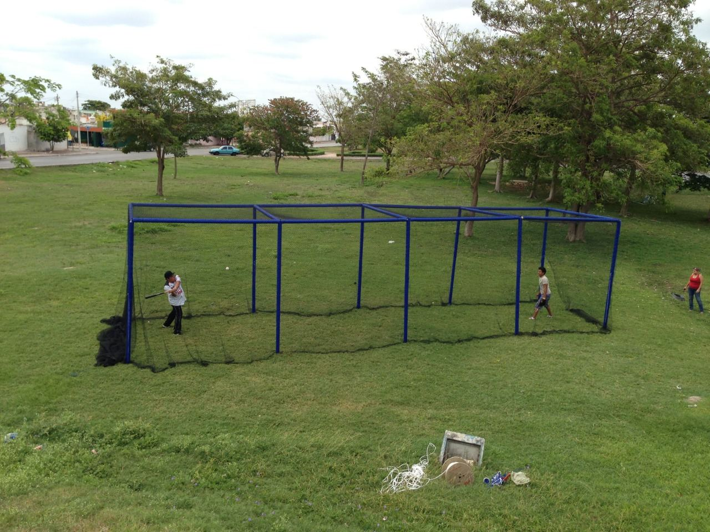
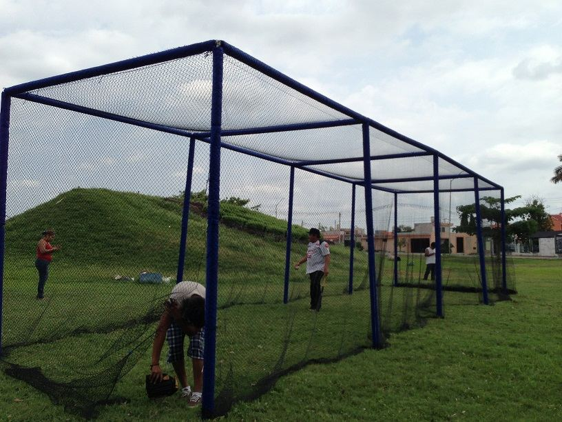
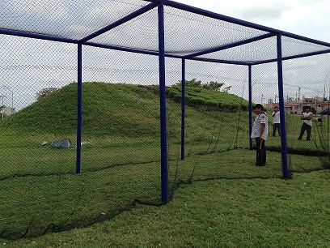

“¿De cuánto debe ser una jaula de bateo?” Es una de las preguntas que más recibimos. La respuesta empieza por el entrenamiento: no se necesita el mismo espacio para batear con tee que para practicar con lanzador a distancia reglamentaria.
Una jaula bien planeada considera largo, ancho, altura, cierre y el movimiento de la red. Su trabajo es contener las pelotas y ordenar la práctica, con espacio para el bateador y el equipo.
¿Existe una medida oficial de jaula de bateo?
En las Reglas Oficiales de Béisbol de MLB 2026 no encontramos una medida obligatoria para jaulas de práctica. Lo que sí fijan es la distancia de lanzamiento del campo de juego. Las medidas de jaulas que verás en el mercado son referencias de diseño, no un reglamento.
Del lanzador a home: 18.44 metros
La distancia reglamentaria es de 60 pies 6 pulgadas, es decir, 18.44 m, medidos del borde frontal de la placa del lanzador a la punta posterior de home. No se mide desde el centro del montículo ni desde donde la pelota sale de la mano.
La distancia en sí no llega a 20 m; lo que necesita más espacio es la jaula completa, porque hay que dejar áreas detrás de home y detrás del lanzador. Para béisbol infantil o sóftbol, confirma la distancia de tu categoría y liga.
¿Tiene sentido una jaula de 25 metros?
Sí: es una buena configuración para practicar a distancia reglamentaria, y nos la han pedido. Al restar los 18.44 m de lanzamiento quedan unos 6.56 m para repartir detrás de home y detrás de la placa del lanzador.
Como ejemplo de planeación: 3 m detrás de home y unos 3.56 m detrás de la placa. Es una distribución ilustrativa, no un mínimo reglamentario.
| Tramo | Ejemplo en una jaula de 25 m |
|---|---|
| Detrás de home | 3.00 m |
| Lanzamiento (placa a home) | 18.44 m |
| Detrás de la placa del lanzador | 3.56 m |
Los márgenes cambian si hay receptor, pantalla protectora, máquina lanzapelotas o carritos de pelotas. Define el largo útil interior: la estructura puede ocupar un poco más.

Ancho: espacio para diestros y zurdos
Una medida que nos piden mucho es 4 m de ancho. Con home al centro, deja 2 m hacia cada lado. Es un buen punto de partida, pero no garantiza el swing completo de cualquier jugador: el bateador se para a un lado de home y necesita terminar su movimiento sin tocar la red. Cuentan la estatura, el largo del bate y cuánto se mueve la red.
Antes de decidir el ancho, prueba las dos posiciones de bateo con el entrenador.
Altura: 3 metros es una opción compacta
También nos piden mucho 3 m de alto. Funciona en ciertos espacios, pero no es “la” altura recomendada para entrenamiento profesional: con más altura hay más margen para el vuelo de la pelota, y con 3 m algunos elevados tocarán el techo antes. Revisa la altura útil ya con la red puesta.
| Medida | Referencia RC | Qué revisar |
|---|---|---|
| Largo | 25 m | Distancia de lanzamiento y espacio detrás de home y del lanzador. |
| Ancho | 4 m | Swing completo de diestros y zurdos sin tocar la red. |
| Alto | 3 m | Altura útil, holgura y tipo de entrenamiento. |
Si hay espacio para ganar ancho o altura, conviene revisarlo antes de fabricar.
Una jaula cerrada necesita más que cuatro lados
La red debe cubrir los dos laterales, el techo y los dos extremos. Revisa las uniones entre paños y el encuentro con el suelo para que no queden huecos por donde escape una pelota.
La red de 1 pulgada que usamos
Para jaulas de bateo proponemos nuestra red romboidal de nylon alquitranado con abertura comercial de 1 pulgada, la más cerrada que fabricamos. La idea es contener la pelota con la malla bien instalada y sin huecos en las uniones.

Una malla más cerrada no es, por sí sola, “la más resistente”: también cuentan el cordón, los nudos, la confección, el estado y las sujeciones. Y aunque el material sea parecido, una red para contener pelotas no está hecha para detener caídas de personas.
Si quieres comparar aberturas, revisa redes de 1, 2, 3 y 4 pulgadas.
Holgura controlada: recibir el batazo sin tensar al límite
Pedimos las medidas útiles del proyecto y dejamos un ligero excedente de confección según el montaje. Así la red puede moverse y deformarse al recibir la pelota sin perder su forma ni su cierre. No buscamos una red caída ni forzar el estiramiento de las fibras.
Una red demasiado tensa transmite el golpe de forma brusca a las sujeciones y favorece los rebotes. Con la holgura adecuada amortigua mejor los batazos, aunque no elimina todos los rebotes ni garantiza que nunca se rompa.
Deja espacio para que la red trabaje
Separa la red de tubos, muros y personas: si la red se mueve pero choca de inmediato con una pared, la holgura no sirve. Quita rebabas y puntos de roce que dañen el cordón.
Si hay lanzador o entrenador alimentando pelotas, usa una pantalla protectora tipo L y el equipo de protección correspondiente. La red exterior no protege al lanzador de una línea de regreso.
Qué necesitamos para cotizar tu red
- Largo, ancho y alto útiles, o las medidas de tu estructura.
- Edad, categoría y tipo de entrenamiento.
- Si usarán tee, lanzador, receptor o máquina lanzapelotas.
- Fotos y ubicación de postes y cables.
- Si estará bajo techo o a la intemperie.
- Si necesitas la jaula completa, solo la red o paños de reemplazo.
Mándanos tu espacio y tu forma de entrenar y te cotizamos la red de tu jaula de bateo a la medida.
Referencias técnicas
- MLB: Official Baseball Rules 2026, regla 2.04 y diagramas del campo.
- Fabricantes de jaulas de bateo (JUGS, Batting Cages Inc.): medidas comerciales de referencia y recomendaciones de holgura en el montaje.
Las medidas de referencia y recomendaciones corresponden a la experiencia de Grupo RC y al criterio de Reinier Coral.